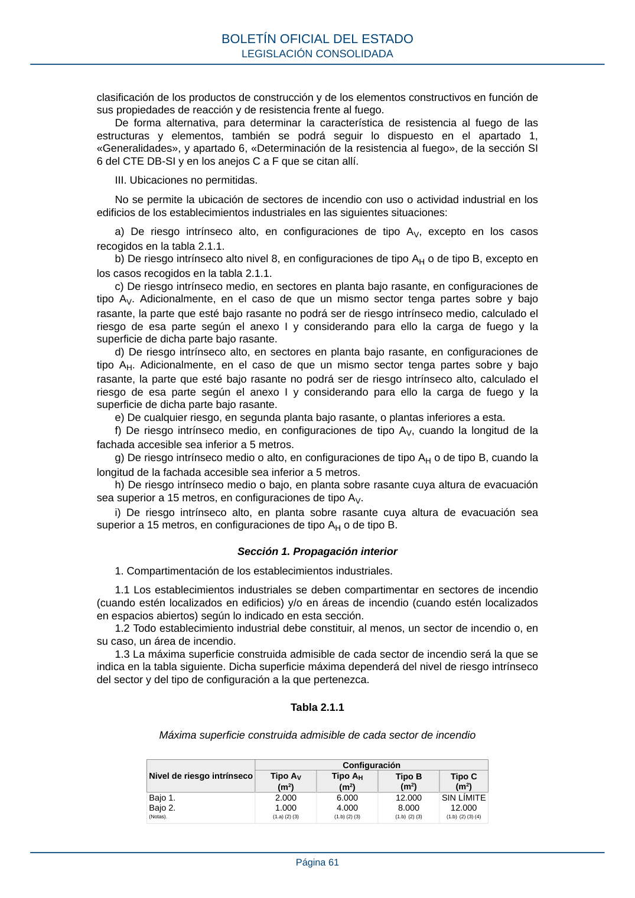

RSCIEI · Página 61 · versión 2025-04-10
SHA256: 85aa0af25d51e5b58d8975a4eefbf76d3f57a8933445cfe814ae9c4818a2e3e7 · página física 61 de 108 · métodos de encabezado
solo si están cotejados.
Formatos: Markdown · JSON de bloques · PDF p. 61 · imagen PNG
clasificación de los productos de construcción y de los elementos constructivos en función de sus propiedades de reacción y de resistencia frente al fuego. De forma alternativa, para determinar la característica de resistencia al fuego de las estructuras y elementos, también se podrá seguir lo dispuesto en el apartado 1, «Generalidades», y apartado 6, «Determinación de la resistencia al fuego», de la sección SI 6 del CTE DB-SI y en los anejos C a F que se citan allí. III. Ubicaciones no permitidas. No se permite la ubicación de sectores de incendio con uso o actividad industrial en los edificios de los establecimientos industriales en las siguientes situaciones: a) De riesgo intrínseco alto, en configuraciones de tipo AV, excepto en los casos recogidos en la tabla 2.1.1. b) De riesgo intrínseco alto nivel 8, en configuraciones de tipo AH o de tipo B, excepto en los casos recogidos en la tabla 2.1.1. c) De riesgo intrínseco medio, en sectores en planta bajo rasante, en configuraciones de tipo AV. Adicionalmente, en el caso de que un mismo sector tenga partes sobre y bajo rasante, la parte que esté bajo rasante no podrá ser de riesgo intrínseco medio, calculado el riesgo de esa parte según el anexo I y considerando para ello la carga de fuego y la superficie de dicha parte bajo rasante. d) De riesgo intrínseco alto, en sectores en planta bajo rasante, en configuraciones de tipo AH. Adicionalmente, en el caso de que un mismo sector tenga partes sobre y bajo rasante, la parte que esté bajo rasante no podrá ser de riesgo intrínseco alto, calculado el riesgo de esa parte según el anexo I y considerando para ello la carga de fuego y la superficie de dicha parte bajo rasante. e) De cualquier riesgo, en segunda planta bajo rasante, o plantas inferiores a esta. f) De riesgo intrínseco medio, en configuraciones de tipo AV, cuando la longitud de la fachada accesible sea inferior a 5 metros. g) De riesgo intrínseco medio o alto, en configuraciones de tipo AH o de tipo B, cuando la longitud de la fachada accesible sea inferior a 5 metros. h) De riesgo intrínseco medio o bajo, en planta sobre rasante cuya altura de evacuación sea superior a 15 metros, en configuraciones de tipo AV. i) De riesgo intrínseco alto, en planta sobre rasante cuya altura de evacuación sea superior a 15 metros, en configuraciones de tipo AH o de tipo B. Sección 1. Propagación interior 1. Compartimentación de los establecimientos industriales. 1.1 Los establecimientos industriales se deben compartimentar en sectores de incendio (cuando estén localizados en edificios) y/o en áreas de incendio (cuando estén localizados en espacios abiertos) según lo indicado en esta sección. 1.2 Todo establecimiento industrial debe constituir, al menos, un sector de incendio o, en su caso, un área de incendio. 1.3 La máxima superficie construida admisible de cada sector de incendio será la que se indica en la tabla siguiente. Dicha superficie máxima dependerá del nivel de riesgo intrínseco del sector y del tipo de configuración a la que pertenezca. Tabla 2.1.1 Máxima superficie construida admisible de cada sector de incendio Nivel de riesgo intrínseco Configuración Tipo AV (m2) Tipo AH (m2) Tipo B (m2) Tipo C (m2) Bajo 1. Bajo 2. (Notas). 2.000 1.000 (1.a) (2) (3) 6.000 4.000 (1.b) (2) (3) 12.000 8.000 (1.b) (2) (3) SIN LÍMITE 12.000 (1.b) (2) (3) (4) BOLETÍN OFICIAL DEL ESTADO LEGISLACIÓN CONSOLIDADA Página 61
